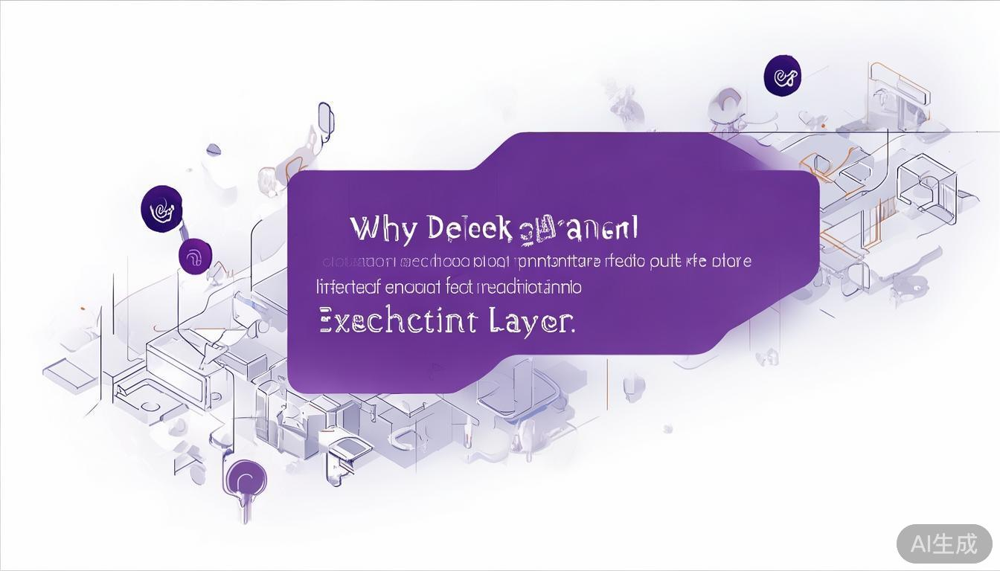

DeepSeek Harness：插件化智能体运行时实战
本章将带你掌握 DeepSeek Harness 这一开源智能体运行时的核心逻辑与实战用法，学完后你可独立完成多工具调度任务、接入任意主流大模型、开发自定义技能插件，搭建可落地的本地智能体工作流，无需从零搭建Agent 执行链路。
什么是 DeepSeek Harness
DeepSeek Harness 是深度求索团队于 2026-08-13 开源的 v0.1 开发者预览版智能体运行时框架，采用 MIT 开源协议，官方 GitHub 仓库可查（信息请以官方最新发布为准）。官方明确给出核心公式：Model + Harness = Agent，它本身不包含任何大模型权重，定位是连接大模型与真实环境的中介执行层，负责把模型输出的推理决策转化为可落地的真实动作。
和模型本身的推理能力不同，Harness 解决的是“模型想做但做不了”的问题：比如模型判断需要读取本地文件、执行Python代码、检索网页信息，这些动作本身无法由模型直接完成，必须由运行时层调度对应能力执行后，再把结果返回给模型继续推理。你可以通过官方仓库的 README 查看完整定位说明，运行git clone https://github.com/deepseek-ai/DeepSeek-Harness.git即可拉取官方源码核验。
为什么需要独立的智能体执行层

大模型本身仅具备文本推理与生成能力，所有涉及与真实世界交互的动作——包括本地文件读写、代码沙箱执行、公网网页检索、多工具串行/并行调度、会话状态持久化——都无法通过模型API直接完成，必须由专门的执行层负责动作落地、结果校验、异常处理，否则Agent只能停留在“文本输出”阶段，无法完成真实任务。
当前AI Agent生态有三类核心组件，定位差异明确可互补：
- 编排层（如LangGraph、LlamaIndex Workflows）：负责定义任务的节点流转逻辑、分支判断规则，偏向工作流的顶层设计
- 协议层（如MCP模型上下文协议）：负责定义工具调用的统一数据格式、通信标准，解决不同工具与模型的兼容性问题
- 执行层（如DeepSeek Harness、Claude Code内置运行时）：负责实际承接模型/编排层的指令，在隔离环境中执行真实动作、返回结构化结果
三者并非替代关系：你可以用LangGraph定义复杂业务工作流，通过MCP协议接入第三方工具，最终用DeepSeek Harness作为底层执行器跑通全链路。验证方式：可分别查阅三类项目的官方文档定位说明，对比功能边界。
核心架构：一切皆插件
DeepSeek Harness 基于成熟的 Cordis 插件系统构建，核心设计原则是“一切皆插件”：框架核心仅保留插件加载、事件总线、服务容器三个最小能力，所有业务能力全部以插件形式存在，可通过配置层自由组合、按需加载，无需修改核心源码。
目前官方定义的可插拔能力覆盖Agent运行全链路：
| 插件类型 | 核心能力 | 官方默认插件示例 |
|---|---|---|
| 模型插件 | 对接不同大模型提供方的API | deepseek、openai、anthropic |
| 工具插件 | 提供可被模型调用的原子能力 | file_reader、code_runner、web_search |
| 技能插件 | 封装特定领域的多步工作流 | repo_analyze、batch_file_rename |
| 沙箱插件 | 提供代码/命令执行的隔离环境 | local_sandbox、docker_sandbox |
| 存储插件 | 会话历史、插件配置的持久化 | sqlite_storage、json_storage |
| UI插件 | 提供不同形态的交互入口 | cli、web_console |
所有插件通过服务注册与事件总线协作：比如模型插件输出工具调用指令后，会触发tool.call事件，调度器插件匹配到对应工具插件后，调用沙箱插件执行动作，执行完成后触发tool.result事件返回给模型插件，全程无硬编码依赖。验证方式：拉取源码后查看src/core与src/plugins目录结构，核心代码量不足1000行，其余全部为插件实现。
四种运行模式与选型逻辑
DeepSeek Harness 提供四种预设运行模式，覆盖从简单命令行任务到复杂插件开发的全场景，用户可根据任务复杂度直接选型，无需手动逐个配置插件组合。
四种模式的适用场景与核心配置如下：
- 标准模式：加载完整默认插件组合（模型、文件工具、代码执行、网页检索、CLI交互），适合日常通用任务，比如分析本地代码库、整理文档、处理表格数据，是最常用的默认模式
- PTC（Programmatic Tool Call）程序化工具调用模式：关闭自然语言交互入口，直接接收结构化的工具调用指令，支持多步工具的串行/并行编排、异常重试、结果校验，适合对接上层工作流、嵌入业务系统做复杂自动化任务
- 极简模式：仅加载核心CLI、模型插件与1-2个指定工具，无多余依赖、启动速度小于1秒，适合快速执行单步/少步命令行任务，比如批量重命名文件、查询接口信息
- 创造模式：加载插件开发调试工具、环境检查工具、热重载能力，不加载默认业务插件，适合自定义插件开发、本地环境兼容性排查、新功能试验
选型逻辑可简单归纳为：日常任务用标准模式、系统对接用PTC模式、快速命令用极简模式、插件开发用创造模式。验证方式：运行dsh --list-modes可查看本地支持的所有运行模式列表。
安装、启动与模型接入
DeepSeek Harness 提供跨平台的一键安装脚本，支持macOS、Linux、Windows WSL2环境，安装完成后通过全局dsh命令行入口操作，所有命令以官方README为准。
官方标准安装命令如下：
# macOS/Linux 一键安装
curl -fsSL https://harness.deepseek.com/install.sh | bash
# Windows PowerShell 安装
irm https://harness.deepseek.com/install.ps1 | iex安装完成后可运行dsh --version验证安装成功，运行dsh web即可启动本地Web控制台，默认端口为3845（若端口冲突可通过--port参数修改，以官方文档为准）。模型接入方面，官方宣称支持DeepSeek、OpenAI、Anthropic、Google、Kimi等近40家大模型提供方，你只需在首次启动时按照提示输入对应模型的API Key即可完成接入，也可通过dsh config set model.provider 命令切换模型，支持的模型列表可运行dsh model list-providers查看，具体兼容情况请以官方文档为准。
实战：极简模式下的本地代码库检索任务
我们以“统计本地DeepSeek Harness源码中所有Cordis相关的API调用次数、整理调用位置”这一真实任务为例，使用极简模式完成全流程操作，全程无需手动写代码。
具体操作步骤如下：
- 首先进入拉取好的DeepSeek Harness源码目录，运行以下命令启动极简模式，仅加载文件检索、代码分析工具：
dsh run --mode minimal --plugins file_reader,code_analyzer "统计当前目录下所有.ts/.js文件中Cordis框架的API调用次数，列出每个调用的文件路径、行号与调用方法，最终输出Markdown格式的统计表格"- 命令执行后，Harness会自动完成：递归遍历目录下的符合后缀的文件、读取文件内容、匹配Cordis相关API（如
ctx.plugin()、ctx.service()、ctx.on()等）、统计结果并生成表格，全程无需人工干预。 - 若需要把结果保存到本地文件，可直接在指令中追加要求，或运行
dsh run --mode minimal --plugins file_reader,code_analyzer,file_writer "上述统计任务完成后，把结果保存到当前目录的cordis-usage.md文件中"。
执行完成后你可直接打开生成的cordis-usage.md文件核验结果，也可运行dsh history查看本次任务的执行日志、每一步的工具调用记录。注意：所有命令参数请以官方最新README为准，若插件名称有调整可通过dsh plugin list查看本地已安装的插件列表。
插件开发入门与生态现状
DeepSeek Harness 的插件生态采用统一的dsh-plugin标签管理，截至v0.1预览版发布时，GitHub 上带dsh-plugin标签的公开仓库已有近百个，覆盖办公自动化、数据处理、科研工具、硬件控制等多个场景，具体数量请以GitHub实时搜索结果为准。
官方规范的标准插件结构非常简单，无需复杂的工程配置，核心仅需两个部分：
SKILL.md文件：用于描述插件的能力、触发关键词、参数说明，供模型自动识别何时调用该插件index.ts/index.js文件：用于注册服务、监听事件、实现具体业务逻辑
一个最简单的“当前时间查询”插件示例代码如下：
// index.js 示例插件：查询当前时间
module.exports = (ctx) => {
// 注册名为get_current_time的工具
ctx.tool.register('get_current_time', {
description: '获取当前系统的本地时间',
parameters: {},
run: async () => {
return new Date().toLocaleString('zh-CN')
}
})
}插件开发完成后，可运行dsh plugin install ./your-plugin-path本地安装测试，测试通过后可发布到npm仓库并打上dsh-plugin标签，其他用户即可通过dsh plugin install 直接安装复用。验证方式：运行dsh plugin create my-first-plugin可通过官方脚手架生成标准插件模板，查看模板内的文件结构即可确认规范。
生态进展与运行时安全
根据深度求索官方公告，DeepSeek Harness 已上线国家超算互联网平台，用户可直接在超算互联网的应用市场一键部署云端Harness环境，同时官方已提供QQ Bot、企业微信机器人的官方接入插件，支持把Harness能力直接对接群聊场景，最新生态动态请以官方公告为准。
智能体运行时直接对接本地环境与公网，安全是核心考量，Harness默认提供三层安全防护机制：
- 最小权限原则：默认所有插件仅拥有执行自身功能所需的最小权限，比如文件读取插件默认仅能访问当前工作目录下的文件，访问上级目录需要用户手动授权
- 沙箱隔离：默认所有代码执行、命令运行都在独立的隔离沙箱中，无法直接访问宿主机的敏感文件、网络端口，若使用Docker沙箱插件可实现进程级、文件系统级的完全隔离
- 插件来源审查：官方插件市场的所有插件都会经过安全扫描，用户安装第三方非官方插件时会弹出明确的风险提示，要求用户确认插件所需权限后才可安装
你可通过dsh sandbox status命令查看当前沙箱的运行状态、权限配置，若需要执行高风险操作可手动切换到Docker沙箱模式。
小结与练习
核心收获
- 明确DeepSeek Harness的定位：它是MIT协议开源的智能体执行层框架，本身不是大模型，核心作用是承接模型推理结果、调度工具完成真实动作，官方公式为Model + Harness = Agent
- 掌握Harness的插件化架构：所有能力均以插件形式存在，支持四种运行模式适配不同场景，可对接近40家主流大模型提供方
- 理解Agent生态的分层逻辑：编排层、协议层、执行层定位互补，Harness作为执行层可与LangGraph、MCP等工具无缝协作
动手练习
- 按照官方安装文档完成DeepSeek Harness本地安装，接入你常用的大模型API Key，运行
dsh --version与dsh doctor确认环境正常 - 使用极简模式完成一个真实任务：批量把当前目录下所有
.txt文件的文件名从中文改为拼音首字母格式，验证执行结果 - 基于官方脚手架开发一个简单的自定义插件，实现“查询当前本机CPU使用率”的工具能力，本地安装后在标准模式下调用验证
扩展阅读方向
可重点阅读DeepSeek Harness官方文档中关于PTC程序化工具调用模式的部分，尝试把Harness作为执行层对接LangGraph编排的工作流，实现一个自动化的论文数据抓取与分析Agent，具体接口规范请以官方最新文档为准。
本文由本站 AI 创作整理，内容基于公开知识/官方资料提炼，信息请以官方发布为准； 涉及的历史事件、产品与数据均可在公开渠道查证，本站不编造来源。引用外部内容遵循其原始许可，标注出处即可。